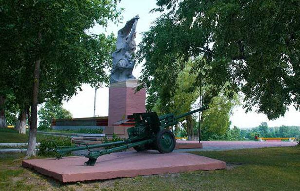

В центре комплекса – 22-метровая стела конусообразной формы, облицованная гранитом с бронзовыми рельефами и увенчанная золотой звездой. С двух сторон от стелы – две симметричные площадки с размещенной на них военной техникой: с правой – боевая техника Великой Отечественной войны, слева – современная. Рядом располагается Аллея Героев. На мемориальные плиты занесены имена похороненных в братской могиле на воинском кладбище 524 воинов и фамилии 365 участников Битвы за Днепр.
Историческая справка
Осенью 1943 года на территории Лоевского района развернулось одно из крупнейших сражений Великой Отечественной войны – Битва за Днепр.
Брагин
Похоронены воины, раненые при освобождении района от нацистов в ноябре 1943 и умершие от ран в госпитале в 1943-1944 гг. В 1962 на могиле установлен обелиск.
Хойники
Памятник установлен в 1978 году в память об освобождении Хойникского района от немецко-фашистских захватчиков.
24 ноября 1978 года на площади Труда, состоялся митинг по случаю освобождения городского посёлка Хойники и Хойникского района от немецко-фашистских захватчиков. Накануне праздника, руководство Хойникского района обратилось в Белорусский военный округ с обращением о выделении единицы военной техники, для установки её в качестве памятного знака. К 35-летию со Дня освобождения Хойникщины от немецко-фашистских захватчиков на площади Труда был установлен танк 68-й отдельной танковой бригады (Т-34, ранее принимавший участие в боевых действиях), а площадь переименована в площадь Танкистов.
На мраморной плите высечены слова «Воинам-освободителям 68-й отдельной Калинковичской Краснознаменной орденов Суворова, Кутузова и Богдана Хмельницкого танковой бригады».
Наровля
Место базирования 27-ой партизанской бригады им. С. Кирова (партизанская стоянка)
Урочище «Попов остров»
… действующем здесь в годы Великой Отечественной войны штабе 27-й Наровлянской бригады им.Кирова. Сохранившиеся землянки, колодец, реконструированная часть траншей, укрепсооружений и т.д. (в благоустроенном виде) наглядно познакомят с бытом и условиями жизни партизан во время войны
Мозырь
Мемориальный комплекс «Курган славы» — это много композиционное сооружение: 45-метровая стела, куб на гранитном постаменте с гаубицей образца 1938 года, Братская могила — захоронение воинов Советской армии и партизан Полесского партизанского соединения, погибших при освобождении Мозыря в 1944 году, здесь горит Вечный огонь, памятник в честь блокадников и защитников Ленинграда и памятный знак воинам-интернационалистам, а также своего рода сооружения под открытым небом музея военной техники.
Ельск
Расположен в центре г. Ельска. Представляет собой стоящую на прямоугольном коричневом постаменте выполненную из белого камня скульптуру скорбящей матери, склонившейся над пробитой пулей каской солдата. Сзади от скульптуры находится стена из розового камня, на которой расположены мемориальные плиты с нанесенными на них названиями сожженных и отселенных деревень и именами погибших во время Великой Отечественной войны жителей Ельского района. К памятнику ведет аллея из светлого камня.
Лельчицы
Члены оперативной группы ЦК ВЛКСМ и лётчики, похороненные в братской могиле, погибли 28 апреля 1943 года при посадке самолёта на партизанском аэродроме около деревни Дубницкое.
Житковичи
Представляет собой комплекс, состоящий из памятного камня и колокола. Камень и колокол расположены на широком постаменте трапециевидной формы, выполненном из белого камня. В передней части постамента – 3 ступени, боковые стороны наклонены под острым углом.
Памятный камень расположен в самом центре постамента и представляет собой валун с неровными краями. В левой части камня – мемориальная доска с именами 92 сожженных и 16 расстрелянных человек, на камень помещен узорчатый металлический крест. Колокол находится слева от памятного камня и помещен в металлическую арку. В правой части комплекса – уличный фонарь на высокой стойке с экспозиционной доской прямоугольной формы. Вся композиция огорожена металлической оградой.

Петриков
Мемориал в честь воинов-освободителей Петрикова расположен на левом берегу Припяти, в окружении живописного парка. Город был освобожден 61-й армией 1-го Белорусского фронта в ходе наступательной операции 1944 года. При этом важную роль сыграл десант, высадившийся в тылу противника. Как напоминание о тех событиях в 1972 году был установлен памятник. Это гранитная стела, которую венчает скульптура моряка-десантника
Октябрьский
Мемориал жертвам фашизма. Похоронены останки 800 жителей бывшей д.Рудня, которых 1 апреля 1942г. сожгли немецко-фашистские каратели. Могила находится у дороги на Озаричи. В 1975г. на могиле установлены две стелы высотой по 6,5м. На одной из них установлена мраморная плита с надписью:”Здесь 1 апреля 1942г. немецко-фашистские захватчики сожгли д. Рудня вместе с её жителями. В огне погибло 800 человек“. В 2010г. могила была реконструирована.
Калинковичи
Мемориальный комплекс в память о жертвах лагерей смерти расположен на месте концлагеря «Озаричи». Под концлагерем «Озаричи» подразумеваются лагеря «Дерть», «Озаричи», «Подосинник» на переднем крае немецкой обороны у поселка Озаричи Калинковичского района. В Великую Отечественную войну немецко-фашистские захватчики создали около посёлка лагеря смерти, где уничтожили 16,5 тыс. человек
Речица
Танк-освободитель. Танк Т-34, принимавший участие в боях за освобождение Речицы от немецко-фашистских захватчиков. Установлен 20 ноября 1943 года, в самый разгар Гомельско-Речицкой наступательной операции, на братскую могилу в парке в Речице в память о погибших танкистах 15-й бригады полковника Кошакова.
Светлогорск
Деревня Ола после войны так и не восстановилась. До 2020 года на этом месте располагалась братская могила со скульптурой солдата и поклонный крест, который и сейчас можно здесь увидеть.
Табличка на камне у креста: «На этом месте 14 января 1944 года были расстреляны, сожжены мирные жители деревни Ола и соседних населенных пунктов. Всего в той жуткий день погибло 1758 человек, из них 950 детей. Вечная память жертвам фашизма.»
Братская могила и скульптура солдата тоже остались, к ним мы подойдем попозже.
В 2020-м году был открыт мемориальный комплекс «Ола» и как вы можете видеть на следующем фото — он получился довольно масштабным. Крест с камнем с фото № 2 находятся в левом нижнем углу, а скульптуру солдата находящуюся на площадке вверху фотографии тут даже и не разглядеть.
Жлобин
В Красном Береге гитлеровцы создали сборный накопительный пункт для детей в возрасте от 8 до 14 лет, которых насильно отнимали у матерей. Всего немцы увезли в Германию 1990 детей. Проект памятника создан творческой мастерской Л.М.Левина, заслуженного архитектора Беларуси, Лауреата Ленинской и Государственных премий.
Буда-Кошелёво
Мемориальный комплекс в центре Буда-Кошелёво. Около 200 солдат и офицеров, погибших в боях за освобождение Буда-Кошелёвского района, захоронены в братской могиле в центре районного города. В последнее время все могилки и братская могила стала мемориальным комплексом. Здесь проходят все районные патриотические мероприятия.
Рогочёв
Образ матери, крепко прижимающей к груди ребенка, навеки застыл на черном мраморе обновленного памятного знака «Детям войны — жертвам фашистского геноцида», открытие которого состоялось 2 июля на Аллее памяти.
Корма
На памятном знаке нанесены надписи "Вечная память евреям, безвинно погибшим от рук нацистов в ноябре 1941 года" на иврите и на русском языке и "Помнік ахвярам фашызму - вязням Кармянскага гета" на белорусском.
Чечерск
Вечный огонь,он выполнен в форме пятиконечной звезды. Так же можно обратите внимание, вокруг памятника расположены мраморные плиты, высечены имена людей, не вернувшихся с войны.
Ветка
Памятник представляет собой двухметровый синий монумент, с табличкой из черного мрамора на нем. На ней написаны имена воинов, погибших за Родину.
Добруш
Памятник выполнен ввиде колокола с шаром в центре. На табличках высечены имена 700-а человек, погибших за Добруш